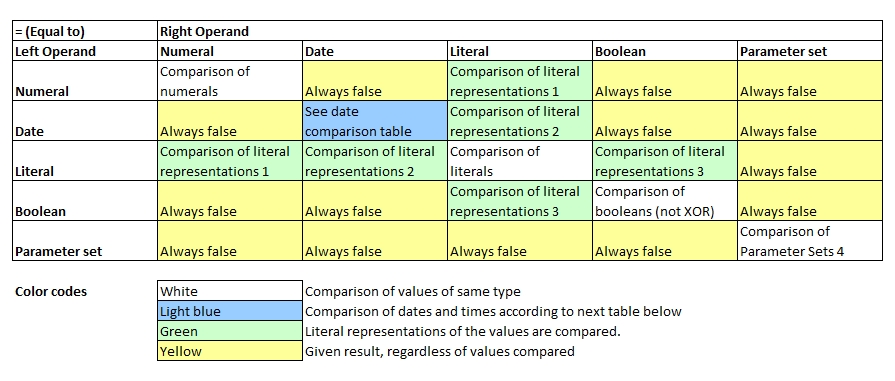
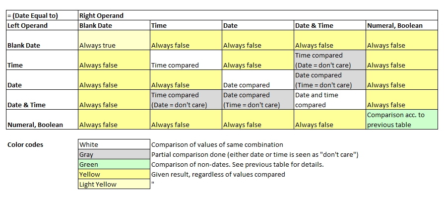

Introduction
Basic rules to equal-to comparisons which are a bit more relaxed than the strictly equal to comparison operator:
- The number of operands on the right-hand-side is not limited to 1. A selection of multiple values may be specified as well as ranges.
- Wildcards are supported in the right-hand operand if the value is a softquoted literal (e.g. specified inside single quotation marks)
- When comparing parameter sets, the same elements in both left and right hand side must exist, but they do not need to be in the same order
- Dates, Booleans and numerals can be compared with literals if they have the same text value / literal representation (e.g. if printed out). Example: '5' = 5, and 'true' = true are both true.
- Comparing two void values will always return true.

1 If a numeral is compared with a literal, then a literal copy will be made of the numeral and both literals are compared.
2 If a date is compared with a literal, then a literal copy will be made of the date and both literals are compared. Depending on the state of the date, the format is "YYYY-MM-DD", "HH:II:SS", or "YYYY-MM-DD HH:II:SS".
3 If a boolean value is compared with a literal, then a literal copy will be made of the boolean value and both literals are compared.
4 Contents in both sets must be the same, but the ordering does not matter. E.g. {1,2,3} = {3,2,1} returns true.
echo("Basic comparisons:");
a[0] = 3 = 3; // true
a[1] = 5.1 = 5; // false
a[2] = 5 = 2,3,5,7; // true
a[3] = 5 = 2,2+1,5,7; // true
a[4] = 5 = 1..3; // false
a[5] = 5 = 4..7; // true
a[6] = 5 = 1..3,5,7; // true
a[7] = {1,2,3} = {3,2,1}; // true
for all variables( a[], x[] ) echo( x[] );
echo("Literal with other types:");
b[0] = 123 = "123"; // true
b[1] = '123' = 123; // true
b[2] = false = 'false'; // true
b[3] = false = 'False'; // false
b[4] = date("2020-08-01") = "2020-08-01"; // true
b[5] = date("2020-08-01") = "01.08.2020"; // false
// The last one is 'false' because literal representation of date is YYYY-MM-DD
for all variables( b[], x[] ) echo( x[] );
echo("Compare with wildcards:");
c[0] = Hello World = '*o*'; // Contains 0, true
c[1] = Hello World = "*o*"; // Not equal to string "*o*", false
c[2] = Hi = 'Ha,Hi,Ho'; // Wildcard with commas, true
c[3] = Hi = Ha,Hi,Ho; // Selection with commas, true
for all variables( c[], x[] ) echo( x[] );Basic comparisons:
true
false
true
true
false
true
true
true
Literal with other types:
true
true
true
false
true
false
Compare with wildcards:
true
false
true
true
Comparing Dates
Note that value of type date may assume 4 states: date only, time only, date and time combined and blank date (no value). Even for the same operator,
the rules of calculating dates and numeric operands differ.

Note that in some cases, only the time or only the dates are compared.
d [] = date('2020-07-14');
dt[] = date('2020-07-14 12:30:00');
t [] = date('12:30:00');
o [] = date(''); // blank date
dz[] = date('2020-07-14 12:30:01');
a[0] = d[] = dt[]; // true, dates same, time not compared
a[1] = t[] = dt[]; // true, times same, date not compared
a[2] = d[] = date("2020-07-15") - 1; // true
a[3] = dt[] = dz[]; // false (time differs)
for all variables( a[], b[] ) echo( b[] );true
true
true
false